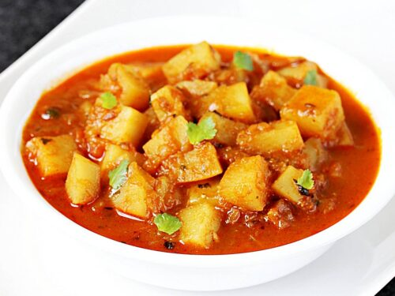

Potato Curry Recipe

Description
A tasty, creamy, mild potato curry.
Ingredients
- 3 tbsp ghee
- 1 tsp cumin, turmeric, coriander, salt
- 1/2 teaspoon mustard seed and ground cayenne pepper
- 6 peeled and diced potatoes
- 2 cups water
- 1 cup yogurt
Steps
- Heat the ghee in a skillet over medium heat, and mix in the cumin, turmeric, coriander, salt, mustard seed, and cayenne pepper. Place potatoes in the skillet, and stir to evenly coat with the ghee. Cook 10 minutes, stirring often. Pour water into the skillet. Reduce heat to low, and simmer 30 minutes, until potatoes are tender.
- Mix the yogurt and peas into the saucepan. Continue cooking until heated through.